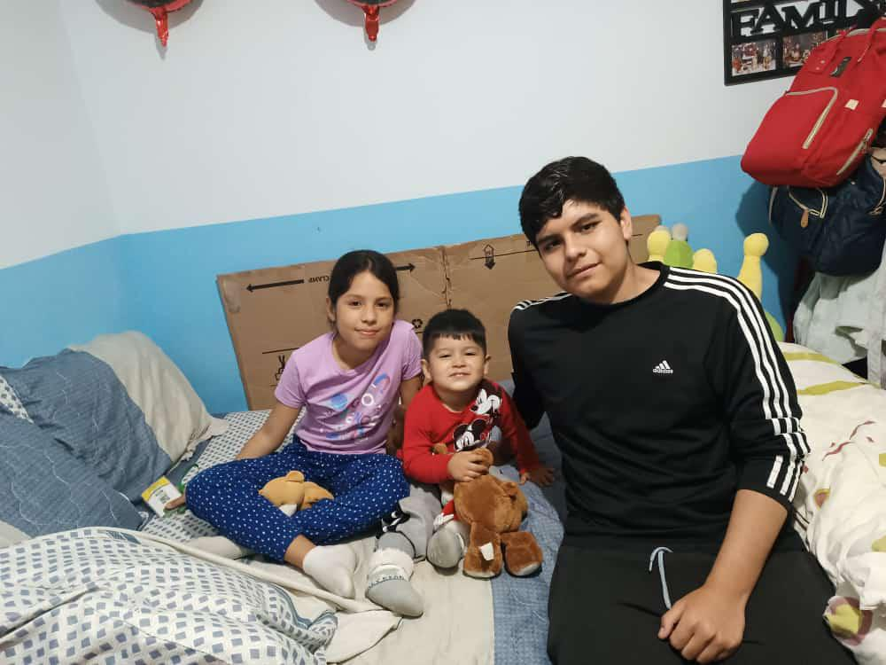

Para ti
Hoy no es solo un día más... es el día en que el mundo fue bendecido con tu luz. 🌼
Que cada paso que des esté lleno de magia, de sueños alcanzados y momentos que te hagan sonreír de verdad.
Un detalle especial 🎵
Tu canción favorita 💜
Recuerdos 🖼️
Tu risa ilumina hasta los días más grises, y tu forma de ser deja huella en el corazón.
Gracias por cada momento, por tu alegría, tu esencia... y por ser tú. Nunca cambies. 💖
Desde mi corazón para ti ✨
Naomi, jamás olvides lo inmensamente especial que eres. Dentro de ti habita una fuerza hermosa, suave pero firme, que inspira a todos los que te rodean.
Sigue soñando en grande, creyendo en ti con el corazón en alto... porque el universo siempre sonríe a quienes caminan con amor. 🌟
Espero que todo esto que preparé logre sacarte una sonrisa, aunque sea pequeñita. Lo hice con mucho cariño y pensando en ti en cada detalle.
Gracias por existir, por ser tú, y por iluminar la vida de quienes tenemos la suerte de conocerte.
Con todo mi cariño... tu tío, Cristhy 💜